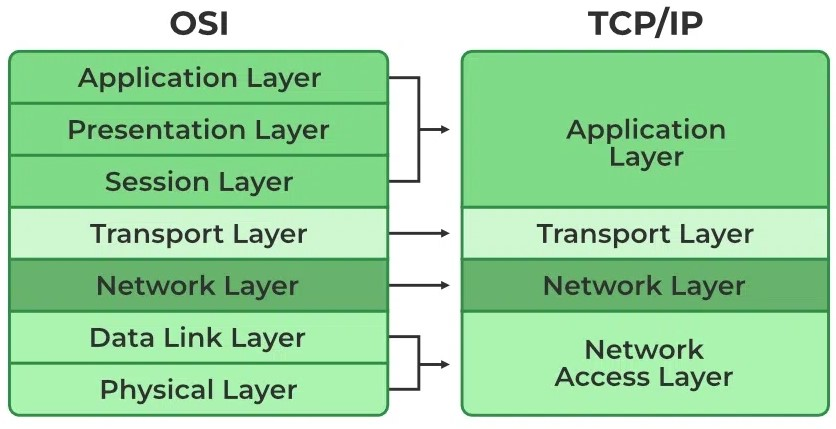
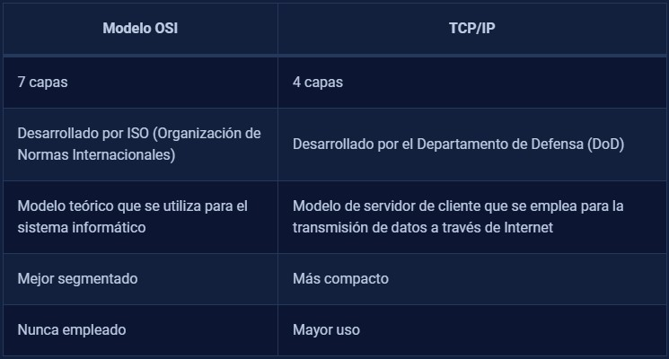
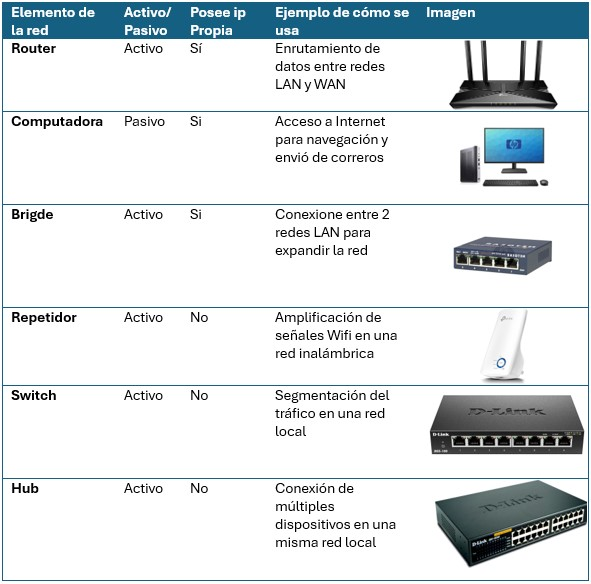
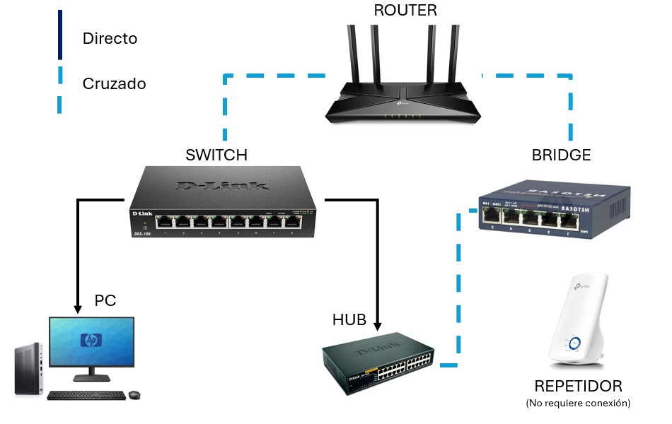

Introducción a redes de Computadora y componentes.
César Borja Ruiz
Ing. Mecatrónica
Didier Cabrera Lopez
Ing. Electronica y Cominicaciones
Luis Felipe Mendieta Campos
Ing. Mecatrónica
Fecha: 12/02/2024
- Resumen -
Las redes de computadora estan presentes en todos los sectores, desde las más sencillas hasta las más complejas y es gracias a ellas que tenemos comunicación con practicamente todo el mundo
En esta practica se llevo a cabo la introduccion a las arquitecturas de red más comunes, su funcionamiento y configuracion, ademas de los componentes basicos de una red local (LAN).
- Introducción -
Las redes de computadoras y sus componentes físicos son la columna vertebral de la conectividad en la era digital. Estas infraestructuras permiten la comunicación y el intercambio de datos entre dispositivos en todo el mundo, facilitando una amplia gama de aplicaciones y servicios. Comprender la importancia de las redes y sus componentes físicos es esencial para desarrollar y mantener sistemas de comunicación eficientes y seguros en diversos entornos.
Los componentes físicos de una red incluyen dispositivos como routers, switches, cables de red, tarjetas de red y dispositivos de interconexión. Estos elementos trabajan en conjunto para facilitar la transmisión de datos entre los dispositivos conectados a la red. Por ejemplo, los routers dirigen el tráfico de datos entre redes, los switches permiten la conexión de múltiples dispositivos en una red local, y los cables de red (como Ethernet o fibra óptica) proporcionan el medio físico para la transmisión de datos. Además, las tarjetas de red permiten que los dispositivos se conecten a la red y los dispositivos de interconexión, como los repetidores y los concentradores, amplían la cobertura y capacidad de la red.
- Materiales -
En esta practica no se utilizaron materiales.
- Desarrollo -
De acuerdo al tema, se llevaron a cabo los diferentes ejericios para cada seccion (resumen o tablas).
Simulación
Para esta practica no fue necesario realizar simulaciones.
Diseño
Para esta practica no fue necesario plantear un diseño.
- Resultados -
Explicacion y capas del modelo OSI.
El modelo de referencias OSI (Interconexion de Sistemas Abiertos o Open Systems Interconection) es una arquitectura de Red basado en capas (7) y apesar de ser algo viejo su uso permanece vigente.
1. Capa Fisica:
Esta capa se relaciona con la transmisión de bits a traves del canal de transmision, y tienen en consideraciones todas las espeficaciones mecanicas, electricas y de temporizacion para su diseño.
2. Capa de Enlance de Datos:
La capa de enlace de datos se encarga de dos tareas principales: transformar el medio de transmisión en una línea libre de errores y regular el flujo de datos entre transmisores y receptores. Divide los datos en tramas para su transmisión secuencial, con confirmación de recepción en redes confiables, y controla el flujo de datos para evitar sobrecargar receptores lentos. En redes de difusión,
también gestiona el acceso al canal compartido mediante la subcapa de control de acceso al medio.
3. Capa de Red:
La capa de red controla el enrutamiento de paquetes desde el origen hasta el destino en una subred. Esto se puede hacer mediante tablas estáticas o de manera dinámica para adaptarse a cambios en la red. También gestiona la congestión y la calidad del servicio. En redes heterogéneas, la capa de red resuelve problemas de direccionamiento, protocolos y tamaño de paquetes. En redes de difusión,
el enrutamiento es más simple, por lo que la capa de red puede ser delgada o inexistente.
4. Capa de Transport
La capa de transporte se encarga de aceptar datos de la capa superior, dividirlos si es necesario, asegurar su entrega correcta y eficiente a través de la red, aislándose de los cambios en la tecnología de hardware. Además, determina el tipo de servicio que debe proporcionar a la capa de sesión y a los usuarios de la red, como conexiones punto a punto o difusión de mensajes.
Esta capa asegura la comunicación extremo a extremo entre programas en máquinas origen y destino a través de la red.
5. Capa de Sesión
Permite establecer sesiones entre usuarios en diferentes ordenadores, controlando el envio, flujo de datos y sincronizacion.
6. Capa de presentacion:
La capa de presentación se diferencia de las capas inferiores al centrarse en la sintaxis y la semántica de la información transmitida. Su función principal es facilitar la comunicación entre computadoras con diferentes representaciones internas de datos. Lo logra definiendo estructuras de datos abstractas y utilizando
codificaciones estándar para la transmisión. Esta capa permite la definición e intercambio de estructuras de datos de nivel superior.
7. Capa de aplicacion:
La capa de aplicación contiene una variedad de protocolos que los usuarios necesitan con frecuencia. Un protocolo de aplicación muy utilizado es HTTP (Protocolo de Transferencia de Hipertexto), que es la base de la World Wide Web. Cuando un navegador solicita una página web, envía el nombre de la página al servidor mediante HTTP, y este último envía la página de vuelta.
Caso de aplicacion:
Supongamos que una empresa está implementando una red de área local (LAN) para conectar varios departamentos dentro de su edificio. En este caso, el modelo OSI podría utilizarse para diseñar y organizar la red en varias capas distintas, cada una con una función específica.
La capa física se encargaría de especificar el tipo de cableado y los medios de transmisión utilizados, como Ethernet o fibra óptica.
La capa de enlace de datos gestionaría el acceso al medio y la detección de errores en la transmisión de datos.
La capa de red se ocuparía del direccionamiento IP y el enrutamiento de paquetes dentro de la red.
La capa de transporte garantizaría la entrega confiable de datos entre los dispositivos finales.
Las capas de sesión, presentación y aplicación se ocuparían de establecer y gestionar sesiones de comunicación, convertir los datos en un formato adecuado para su presentación y proporcionar servicios de aplicaciones como la transferencia de archivos o el correo electrónico.

Fig 1. Protocolo OSI vs TCP/IP
Explicacion y capas del modelo TCP/IP
ARPANET, patrocinada por el Departamento de Defensa de Estados Unidos (DoD), conectó cientos de universidades e instalaciones gubernamentales mediante línea
s telefónicas rentadas. Con el tiempo, se expandió para incluir redes de satélites y de radio, lo que planteó la necesidad de una nueva arquitectura de referencia. Esta arquitectura se conoce como el Modelo de referencia TCP/IP, debido a sus dos protocolos primarios. Diseñado con la preocupación de la supervivencia de la red en caso de pérdida de hardware de la subred, el TCP/IP también se centró en la flexibilidad para satisfacer diversos requisitos de aplicaciones, desde la transferencia de archivos hasta la transmisión de voz en tiempo real.
Al igual que el modelo de referencia OSI, el modelo TCP/IP tambien esta divido en capas:
1. Capa de Enlance:
Todos estos requisitos llevaron a la elección de una red de conmutación de paquetes basada en una capa sin conexión que opera a través de distintas redes. La capa más baja en este modelo es la capa de enlace; esta describe qué enlaces (como las líneas seriales y Ethernet clásica) se deben llevar a cabo para cumplir con las necesidades de esta capa de interred sin conexión. En realidad, no es una capa en el sentido común del término, sino una interfaz entre los hosts y los enlaces de transmisión. El primer material sobre el modelo TCP/IP tiene poco que decir sobre ello.
2. Capa de Interred:
Esta capa es fundamental para mantener unida toda la arquitectura. Se corresponde aproximadamente con la capa de red en el modelo OSI. Su función es permitir que los hosts envíen paquetes a cualquier red y viajen de forma independiente hacia el destino, incluso si este se encuentra en una red diferente. Los paquetes pueden llegar en un orden diferente al enviado, por lo que las capas superiores pueden necesitar reorganizarlos para una entrega en orden. La capa de interred define un formato de paquete y un protocolo oficial llamado IP (Protocolo de Internet), junto con un protocolo complementario llamado ICMP (Protocolo de Mensajes de Control de Internet). Su tarea principal es enrutar los paquetes IP hacia su destino. El enrutamiento y la congestión son aspectos clave de esta capa.
3. Capa de Transporte
Está diseñada para permitir que las entidades pares, en los nodos de origen y destino, mantengan una conversación, similar a la capa de transporte en OSI. En esta capa se definen dos protocolos de transporte de extremo a extremo.
El primero es TCP (Protocolo de Control de la Transmisión), un protocolo confiable orientado a la conexión que garantiza la entrega sin errores de un flujo de bytes de una máquina a otra en la interred. TCP segmenta el flujo de bytes en mensajes discretos y los pasa a la capa de interred.
El segundo protocolo en esta capa es UDP (Protocolo de Datagrama de Usuario), un protocolo sin conexión y no confiable utilizado en aplicaciones que no necesitan la asignación de secuencia o el control de flujo proporcionado por TCP.
4. Capa de aplicacion
El modelo TCP/IP no incluye capas de sesión ni de presentación, ya que no se consideraron necesarias. Las aplicaciones simplemente incorporan cualquier función de sesión y presentación que requieran. Esto ha demostrado ser acertado, ya que estas capas se utilizan muy poco en la mayoría de las aplicaciones. Encima de la capa de transporte se encuentra la capa de aplicación, que contiene todos los protocolos de alto nivel. Algunos de los primeros protocolos incluyen TELNET para terminal virtual, FTP para transferencia de archivos y SMTP para correo electrónico. Con el tiempo, se han agregado muchos otros protocolos.

Fig 2. Diferencias entre protocolos.
Caso de aplicacion:
Supongamos que una empresa necesita conectar su red local a Internet para permitir el acceso a recursos externos y servicios en la web. En este caso, el modelo TCP/IP se utilizaría para facilitar la comunicación entre la red local y la Internet
La capa de aplicación incluiría protocolos como HTTP para acceder a páginas web, FTP para transferir archivos y SMTP para enviar correos electrónicos.
La capa de transporte utilizaría protocolos como TCP para proporcionar una conexión confiable y orientada a la conexión, garantizando la entrega de datos sin errores.
La capa de interred manejaría el direccionamiento IP y el enrutamiento de paquetes entre la red local y la Internet.
La capa de enlace se encargaría de la transmisión de datos a través de los medios de comunicación físicos, como cables Ethernet o conexiones inalámbricas.
Elementos de una red

Fig 3. Elementos fisicos de una red.

Fig 4. Elementos interconectados.
- Conclusiones -
La introduccion a las arquitecturas y redes nos sirvio bastante para saber como estan diseñadas para ser eficientes, rapidas y sostenibles, aunque es bastante teoria es importante conocer a fondo como funcionan para poder
identificar problemas y proponer soluciones.